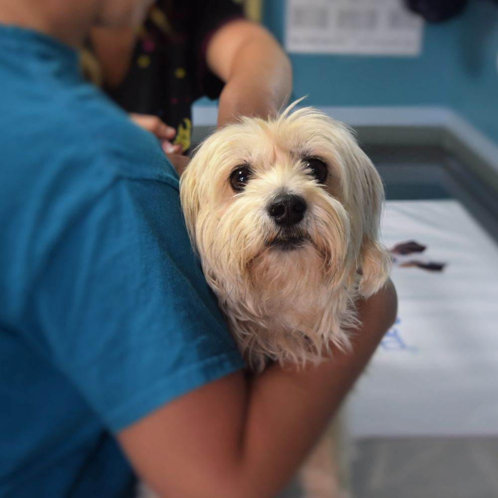

Na Clínica Veterinária Vida Animal, cuidamos de quem você ama como se fosse da nossa própria família. Oferecemos atendimento de excelência para cães, gatos e pequenos animais, garantindo saúde, bem-estar e qualidade de vida para cada paciente.
Na Clínica Veterinária Vida Animal, cuidamos de quem você ama como se fosse da nossa própria família. Oferecemos atendimento de excelência para cães, gatos e pequenos animais, garantindo saúde, bem-estar e qualidade de vida para cada paciente.
Contamos com uma equipe de veterinários experientes e apaixonados pelo que fazem, além de uma estrutura moderna equipada com tecnologia de ponta para exames, cirurgias e tratamentos especializados. Aqui, cada consulta é personalizada, e cada cuidado é feito com carinho, atenção e dedicação.
Além disso, acreditamos que a prevenção é o melhor caminho para uma vida longa e saudável. Por isso, orientamos cada tutor sobre vacinação, alimentação, higiene e comportamento, acompanhando de perto todas as fases da vida do seu pet — do filhote ao idoso — com o mesmo cuidado e comprometimento.
A Vida Animal não é apenas uma clínica, é um espaço onde o cuidado vai além da medicina: é sobre confiança, respeito e amor pelos animais. Seu pet merece o melhor, e nós estamos aqui para garantir isso todos os dias.

🌿 Missão
Oferecer atendimento veterinário de excelência, com amor, respeito e responsabilidade, garantindo a saúde, o bem-estar e a qualidade de vida dos animais de estimação e a tranquilidade de seus tutores.
🌟 Visão
Ser referência em cuidados veterinários na região, reconhecida pela confiança, acolhimento e inovação nos serviços prestados, tornando-se o primeiro nome que vem à mente quando se pensa em cuidado e amor pelos animais.
💚 Valores
- Amor pelos animais: base de tudo o que fazemos.
- Ética e respeito: com pacientes, tutores e equipe.
- Profissionalismo: atendimento responsável e comprometido.
- Inovação: uso de tecnologia e boas práticas para aprimorar cada serviço.
- Empatia: compreender e atender cada pet como único.
- Transparência: comunicação clara e honesta com os tutores.
- Responsabilidade ambiental: compromisso com práticas sustentáveis e respeito à natureza.
- Trabalho em equipe: união e colaboração entre profissionais para garantir o melhor resultado.
- Dedicação contínua: busca constante por aprendizado e aperfeiçoamento.
- Acolhimento: ambiente seguro e tranquilo para pets e tutores.
- Confiança: base de todas as relações que construímos com nossos clientes e parceiros.